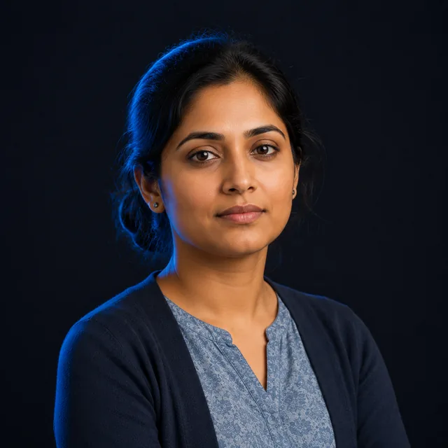

You just got pulled onto a project — a transition, a migration, a CI initiative, a system go-live — on top of your day job. This path shows you how to use that opportunity to get noticed and get promoted.
In a GBS organization, projects are where scale and leverage are created — and where careers accelerate. When a new entity is integrated, an acquired company is rolled in, or SAP is deployed to a business not yet on the platform, the organization needs SMEs from the existing teams to support, document, test, and train. That SME is often a young associate. Done well, this is the fastest visibility you will ever get. This six-week path shows you how to do it well.

Priya asks — "The migration needs me. So does BAU. Something has to give."
→Protect your delivery and your standing while the project runs through you.
Six weeks, mapped to the phases of a real project. Click any week to jump to it.
Most associates see a project assignment as extra work on top of BAU. The ones who advance see it for what it is: an audition in front of people who do not normally see them.
Project managers, workstream leads, and senior stakeholders from across the organization are suddenly watching how you work. These are people who would never see your BAU performance — and some of them make hiring decisions.
When a business is integrated or migrated, new roles open for the new scope. SMEs who supported the transition are the natural candidates — you already know the processes and the people. Transitions create org charts; be on them.
New joiners are hired for the new entity. Someone has to train them. That someone is often the SME who documented the process. Training others is a leadership signal — and a direct step toward a Senior Associate or Team Lead role.
In every transition I ran, the associates who treated it as "extra work" stayed associates. The ones who treated it as a stage — who documented cleanly, tested rigorously, trained the new joiners, and made themselves visible to the project leadership — got pulled into the new structure. The work is the same. The framing is everything.
Reading changes nothing on its own. These three tools turn each module into action: a weekly prompt, a desk reminder, and a place to bank the proof.
6 weekly cards. Five actions each — applied on your real project alongside BAU.
Open the cards → RememberThe core frameworks as printable reminders. Pin one at your desk until it is second nature.
Open the cards → BankTrack the 10 real deliverables you will build. By the end, it is your evidence file.
Open the tracker →Get knownBuild professional visibility on purpose — LinkedIn, a network that means something, and safe posting. A cross-path topic for every level.
Open the topic →Break throughWhen your strengths become your ceiling. The shift from individual output to scaling a team — and the moves that get you through it.
Open the topic →System literacyThe system of record behind your day. What it is, the modules you touch, how to navigate, and why the data underneath matters.
Open the topic →Before you do anything, understand what kind of project you are on, what is expected of you, and how to protect your BAU. Confusion in week one costs you the whole project.
Project work plays by different rules. Learn them fast and you will shine.
Project work runs on different rules than your day job. BAU rewards consistency and throughput. Projects reward hitting milestones, flagging risks early, and clear communication across people who do not share your context. The first mistake associates make is running their project work like BAU — heads down, just executing — and missing that on a project, visible communication is part of the deliverable.
The project types you will meet in GBS| Project type | What you'll do as SME | Why it matters |
|---|---|---|
| Transition / migration (roll-in of a new entity) | Document current state, support knowledge transfer, test, train new joiners | This is where GBS scale is built — highest visibility, most new roles |
| System deployment (SAP / ERP go-live) | Validate process design, write and run test cases, support hypercare | Often combined with a transition; deep exposure to process and technology |
| CI / Lean Six Sigma project | Provide process reality, collect data, validate improvements | Your ground truth keeps the project honest; belt-holders need you |
| Controls / compliance initiative | Map controls, document gaps, support remediation | Builds a compliance skill set that opens audit and risk career tracks |
If you are on a transition that combines an SAP deployment with a company roll-in, you are in the best possible spot. That is the GBS growth engine in motion. The new entity needs people who understand both the old way and the new platform — and after go-live, those people are exactly who gets offered the new roles. Treat it accordingly.
Brief your AI with your Session Document, then ask: "I've been assigned as SME to a [transition / SAP go-live / CI] project while keeping my BAU. Interview me about my role, then produce a one-page summary of what is expected of me, what good looks like, and the three biggest risks to my BAU."
Agree protected time up front. Two full-time jobs is how people burn out.
The fastest way to fail at both is to accept the project on top of a full BAU load with no protected time. You will burn out, your BAU quality will slip, and the project will suffer — and somehow it will look like your fault. Have the capacity conversation with your manager before the project ramps, not after you are drowning.
What to agree before you start| Agree this | Why |
|---|---|
| Protected project time (e.g. X days/week or % allocation) | Without it, project work happens on top of everything — unsustainable |
| What BAU gets covered or paused | Someone must absorb your BAU, or it silently fails |
| Who your project point of contact is | You need one clear channel for project asks, not five |
| How conflicts get escalated | When BAU and project collide, you need an agreed rule, not a panic |
Use the SME Participation Agreement template to draft your capacity ask. Walk your manager through it this week. The goal is one page, agreed, that protects you when the project gets intense.
In a dense month, operations will try to reclaim you. Your line manager wants BAU covered; the project lead wants you on the project. Do not try to win that tug-of-war yourself — that fight is a level above you. Ask your team lead to sort it out with the project manager, and flag the recall to the project lead so no one is blindsided. Know the hierarchy: your line manager outranks the project lead, so a straight contest goes their way — and if it is truly stuck, the manager or director above both of them owns the call. Your part is honesty about capacity. A hundred percent on both jobs rarely holds. Work out what you can really carry, draw the line, and say where it is — out loud, early.
Knowing the rules of project work — versus BAU — is what stops you failing at both.
Knowledge transfer is where SMEs are made or broken. The quality of your documentation now determines how much pain everyone feels at go-live — and how good you look doing it.
What is left is the practical core — the hard conversations, the ready-to-use templates, the AI workflows, and the 90-day roadmap that turns all of it into a promotion case. One payment. Lifetime access. Every path, now and later — for $45.
Get Full Access — $45 →Every template is built to be edited and used on your real project.
One page to agree protected time and BAU coverage with your manager.
Download .xlsx →Move every process through document, demonstrate, practice, validate.
Download .xlsx →Structured test cases with happy path plus exceptions and expected results.
Download .xlsx →Capture risks, assumptions, issues, dependencies — with mitigations.
Download .xlsx →Honest readiness assessment for your area before go-live.
Download .xlsx →Turn project contributions into evidence and a concrete next-role ask.
Download .xlsx →